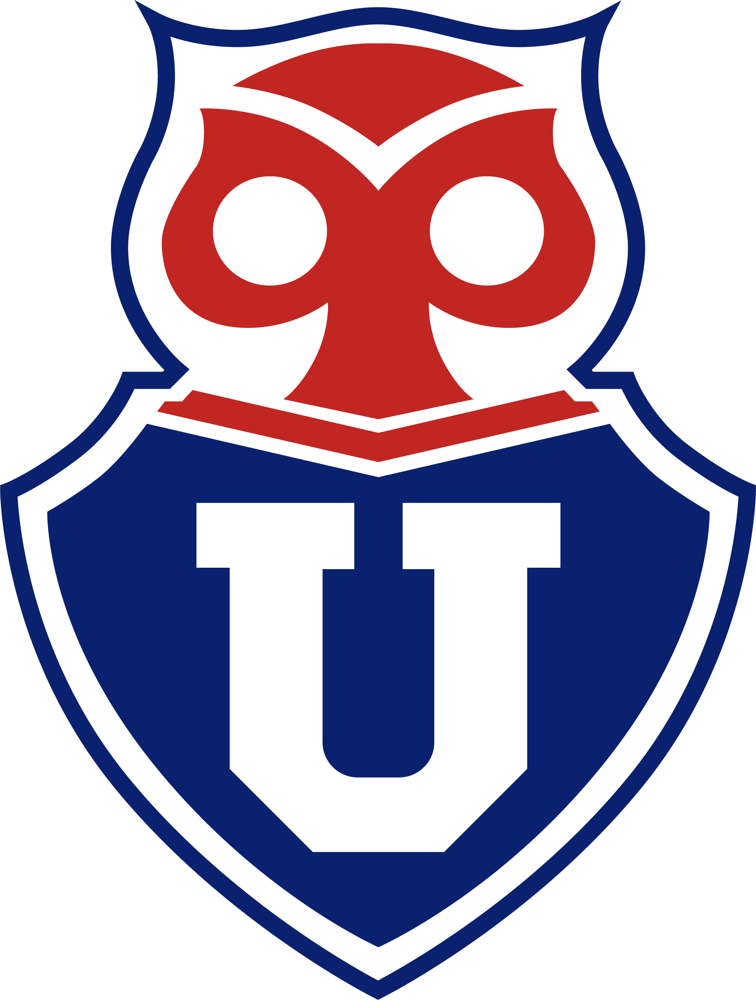
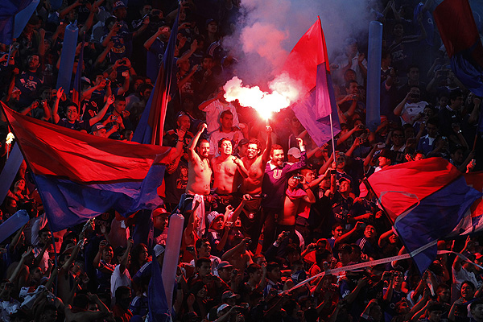

Historia de la Universidad de Chile
El Club Universidad de Chile, cariñosamente conocido como "La U" o "El Bulla", es un club de fútbol profesional con una rica historia, fundado oficialmente el 24 de mayo de 1927 en Santiago. Es uno de los equipos más exitosos y populares de Chile, jugando actualmente en la Primera División. A lo largo de su trayectoria, el club se ha asociado inconfundiblemente al color azul y lleva como emblema en su logo al Chuncho (adoptado en 1943).
En cuanto a su palmarés, la Universidad de Chile ha conquistado el título de la liga chilena en 18 ocasiones. Además de su éxito nacional, su mayor logro continental llegó con la Copa Sudamericana 2011, su primer título internacional. Esta campaña fue histórica e inigualable, ya que el equipo se proclamó campeón de forma invicta y tuvo en sus filas a Eduardo Vargas, el máximo goleador del torneo. Este período de gloria se enmarca en una etapa reciente muy exitosa, donde el club sumó varios campeonatos de liga, incluyendo su trayectoria invicta en la Sudamericana. A nivel de Copa Libertadores, la "U" ha demostrado su jerarquía continental al llegar cuatro veces a las semifinales (1970, 1996, 2010 y 2012).
Las principales rivalidades del club son los Clásicos de Santiago: el Clásico del fútbol chileno contra Colo-Colo y el Clásico Universitario contra la Universidad Católica. Finalmente, aunque la Universidad de Chile no es dueña de su estadio, tradicionalmente ejerce su localía en el Estadio Nacional Julio Martínez Prádanos, ubicado en Ñuñoa. Este recinto fue testigo de su regreso en 2010, tras un proceso de modernización, en un importante partido de semifinales de Copa Libertadores contra Guadalajara de México.

Los 29 Títulos
La Universidad de Chile ha forjado una historia gloriosa con un total de 29 títulos oficiales, consolidándose como uno de los clubes más exitosos del fútbol chileno. A continuación, se detalla su palmarés:
- 18 Títulos de Primera División: La U ha conquistado el campeonato nacional en los años 1940, 1959, 1962, 1964, 1965, 1967, 1969, 1994, 1995, 1999, 2000, 2004 Apertura, 2009 Apertura, 2011 Apertura, 2011 Clausura, 2012 Apertura, 2014 Apertura y 2017 Clausura. Estos títulos reflejan la consistencia y dominio del club a lo largo de las décadas.
- 6 Copas Chile: Triunfos en 1979, 1998, 2000, 2012-13, 2015 y 2019, destacando su capacidad para brillar en torneos de eliminación directa.
- 1 Supercopa de Chile: Ganada en 2015, un título que enfrentó a los campeones de liga y copa, demostrando la supremacía de la U en ese año.
- 1 Primera B: En 1988, la U se alzó con el título de la segunda división, mostrando su resiliencia al regresar rápidamente a la máxima categoría.
- 1 Copa Sudamericana (2011): El hito más glorioso en la historia internacional del club, logrado de forma invicta bajo la dirección técnica de Jorge Sampaoli. Este título marcó un antes y un después, con jugadores como Eduardo Vargas y Charles Aránguiz liderando un equipo inolvidable que conquistó América con un fútbol vertiginoso y ofensivo.
- 3 Torneos Metropolitanos y Regionales: Incluidos en su palmarés, estos títulos de los primeros años del club refuerzan su legado histórico.
Este impresionante historial de trofeos es un testimonio del compromiso, la pasión y el talento que han caracterizado a la Universidad de Chile a lo largo de su historia, consolidándola como el Romántico Viajero del fútbol chileno.

La Apasionada Hinchada
La hinchada de la Universidad de Chile, conocida como Los de Abajo, los Azules, los Románticos Viajeros y los Chunchos, es el corazón pulsante del club. Con una pasión desbordante, llenan los estadios con cánticos que resuenan como himnos, banderas azules ondeando al viento y un amor inquebrantable por la camiseta. En cada partido, ya sea en la victoria o en la derrota, su energía transforma el ambiente en una verdadera fiesta futbolística. Los de Abajo no solo apoyan, sino que viven y respiran la U, viajando por Chile y el continente para alentar al equipo, demostrando una lealtad que trasciende generaciones. ¡Son la fuerza indomable que hace latir el alma del Romántico Viajero!

Cuestionario Azul
¡Eres un bUllangUero oficial!